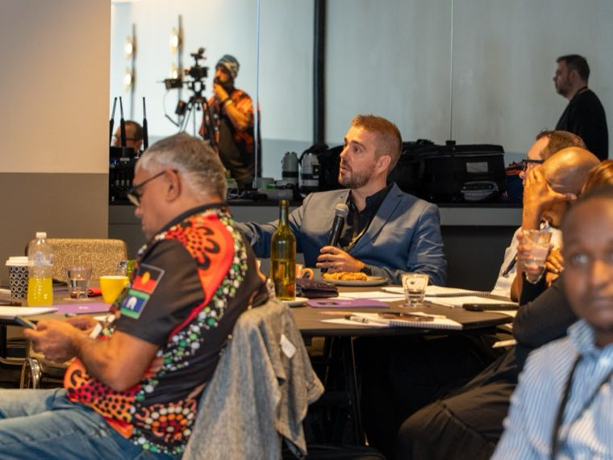

Founder Issues Holding Back Your NDIS Business Growth
Signs the owner has become the bottleneck in an NDIS business, which jobs to hand over first, and how to step back without losing referrers.
Read more
To grow an NDIS business, work on six areas in order: where your referrals come from, how fast intake turns an enquiry into a service, how long participants stay, how long staff stay, how much capacity you have to fill, and how much of the work still runs through you. Give each area one number and check it every month.

The NDIA's quarterly report for the June 2026 quarter counts 782,013 active participant plans nationally (NDIA Quarterly Report Q4 2025-26 (opens in a new tab)). Your share of that comes down to whether each part of your business can take on more participants without something breaking.
The six areas that drive growth in an established NDIS business are referrers, intake, participant retention, staff retention, capacity and owner time. Each one has a number you can pull from your CRM, rostering or payroll records.
| Area | The number to watch |
|---|---|
| Referrers | Active referral relationships, and enquiries from each one per month |
| Intake | Days from enquiry to first service, and the share of enquiries that sign a service agreement |
| Participant retention | Participants who leave each quarter, as a share of the total |
| Staff retention | Support workers who leave in their first 6 months |
| Capacity | Empty places, rooms or unfilled support hours each week |
| Owner time | Hours a week you spend on work someone else could do |
I work through them in four phases:
The rule behind the order: "You can't scale something that doesn't work yet."
Before any of it, pick one goal. Revenue, profit and retention each need a different plan, so write the goal as "from X to Y by when". From a strategy session: "If it's a retention base, more importantly, we want to go from losing 20% of our clients to 5% of our clients. If that's the goal, that's fine also, we just need to be clear."
I also start with two numbers: the capacity you need to fill and the revenue you want to grow.
New participants reach an NDIS business through two doors. A referrer recommends you, usually a support coordinator, an OT or a hospital discharge team, or a family finds you directly through search, social media or word of mouth. Track which door every new participant came through.
Referrers keep a mental top five. I call it the black book. "If you're on the top 5 of that [referrer]'s black book, you're red hot, right? But you can very quickly fall off if you forget them."
So look after 20 referrers properly before you chase 500 names. A target I set for one sales team was 20 active referral relationships, with at least one useful touch a week for each: a call, a coffee, a good news story, or an answer to a problem they have that week. More on this on my referrals and partnerships page.
Your past enquiries are a source too. At one business I worked with, one plain email to everyone who had ever enquired went to 83 people and got 15 replies in a week. That was more than the expo they had paid for.
Run the short game, filling capacity now from referrals already in the pipeline, alongside the long game of becoming the name people think of in your area. "They are long term, but it won't pay the bills in short. So you need to really work on both."
The number to watch: active referrers who sent at least one referral in the last quarter, and enquiries per month from each.
Intake is where an enquiry becomes a participant or goes cold. Measure two things: the days from first enquiry to first service, and the share of enquiries that end in a signed service agreement. Both come from your CRM, so keep it up to date.
Cost per lead is the first number on an ad report, and it tells you very little on its own. "I'm never going to rest on the CPL alone because quite frankly CPL doesn't matter if they're not converting." I follow the bouncing ball all the way through to one line: we spent X, and we got Y participants.
Work back from what one participant is worth before you set an ad budget. At $20 a click, 50 clicks costs $1,000, and if 10% of those people enquire you get 5 enquiries. I run a test like that for 3 months and review it weekly. If your team cannot follow up the enquiries you already get, don't pay for more.
Before you hire another intake officer, make sure you can see which enquiries and channels convert. My sales and enquiry process page covers how I set intake up.
The number to watch: days from enquiry to first service, and the share of enquiries that sign.
Every participant who leaves cancels out a new one you paid to win. Fix retention before you turn up spend.
I call it the leaky bucket. "You're using the leaky bucket scenario where you're pouring stuff in, the stuff's falling out the bottom. And so stabilising service delivery and retention means a lot when you're doing a decent job on the top end."
A provider I worked with was winning new customers through ads while losing others through inconsistent service delivery. The ads brought people in. The fix was in delivery.
Track staff retention alongside it. Participants build trust with the workers who turn up each week, so put the support workers who leave in their first 6 months in the same report as participant losses. If the two lines move together, look at rostering and onboarding before you look at marketing.
The numbers to watch: participants lost each quarter as a share of the total, and support workers who leave in their first 6 months.
Add a service or a new area when your records show demand you cannot meet and your current places are full. A busy feeling is a poor guide for a decision that size.
One team told me they were inundated with enquiries for one area, and the business opened a second site nearby on the strength of it. I opened the CRM and found 11 contacts in about a year. "Without the data, it's personal opinion."
Going narrower is often the better move. I push providers to get more specific, down to something like "only in one region, for two specific needs, with a team trained for them day in and day out." A tight focus makes you easier for a referrer to remember and easier for a family to choose.
The numbers to watch: empty places or hours each week, and enquiries per month by service and by area.
The six numbers in the table, checked monthly against your one goal, show whether your NDIS business is growing. If one is moving the wrong way, that is the next job.
Owner time is the sixth number, and the easiest one to leave off the page. If intake, rostering cover and every referrer relationship still run through you, the business can only grow as fast as your week allows. I cover that in founder issues holding back NDIS business growth.
Every new idea goes through the same test: "Is it going to shift the needle for the business goals or is it noise?... Is it a now problem or a future problem? Is it a must have or a nice to have?" One leadership team I worked with came in with a register of 50+ ideas from nine months of meetings and left the day with 5 or 6.
If you want a second set of eyes on your six numbers, that is where my free growth audit starts. Get a free growth audit.
It depends on your starting point, so I split it into phases. Foundations take about four weeks: positioning, audience, goals and voice, with no paid spend. Paid channels then need a test of around 3 months, reviewed weekly, before you judge them. Referral relationships take longer to pay off. Run the short game of filling current vacancies alongside the long game of building your name in your area.
Both, in proportion to where your participants come from today. Check your CRM for which door each participant came through. Referrers such as support coordinators, OTs and hospital teams are usually the faster short-game source, so look after 20 active relationships with a useful touch each week. Families searching directly are the long game, built through search, social media and a website that answers their questions.
Neither, until your current services are full and your records show demand you cannot meet. Pull enquiries by service and by area from your CRM for the last 12 months. Expanding on a feeling of being busy is an expensive mistake. Going narrower, with one region and a few specific needs, often grows a provider faster because referrers remember what you do.
It depends which participants you want to serve. The NDIA says participants with NDIA-managed funding can only use registered providers, so registration opens that group to you. Self-managed and plan-managed participants can use unregistered providers. The NDIS Code of Conduct applies to registered and unregistered providers alike, and that includes how you advertise. Never describe your business as "NDIS approved".
After someone senior has set the goal, the numbers and the plan, so the new hire walks into a defined role. Fix the six areas first, then define the role around them. If you want senior help to get there, my Managed Growth service covers it.

Signs the owner has become the bottleneck in an NDIS business, which jobs to hand over first, and how to step back without losing referrers.
Read more

How marketing and referrals work together to grow a provider, and how to tell which one is doing the work.
Read more

What a virtual assistant can take off an NDIS business owner's plate, which tasks to keep, how to protect participant data and how to measure it.
Read more